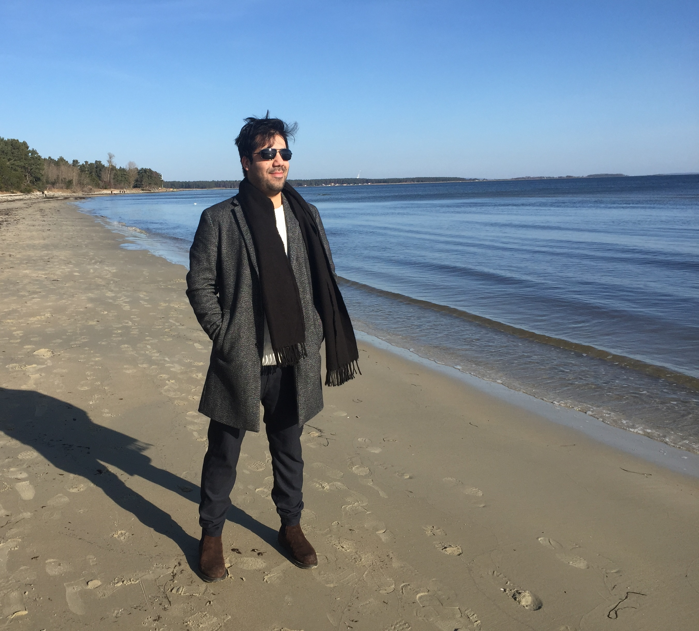

Om mig

Mitt namn är Khalid Safi. Född och uppvuxen i Kabul, Afghanistan. Jag kom till Sverige år 2011 och har bott här sedan dess. Jag har bott i olika städer i Sverige som Växjö, Sölvesborg, Kristianstad och min nuvarande stad är Karlskrona eftersom jag studerar på BTH. Jag har två syskon och är äldst bland dem. Jag har alltid varit intresserad av teknik världen och det är en av anledningarna till att jag studerade på Software Engineering, sen märkte jag att Webbprogrammering är min grej så jag valde att börja med Webbprogrammering. Programmering har blivit som passion för mig, det är något som jag vill syssla med i min framtida kärriar. Jag har några hobbies men mina absolut favorit är att programmera, spela spel på ps4. Jag brukar träna på gym, laga mat, cykla och även läser många böcker.